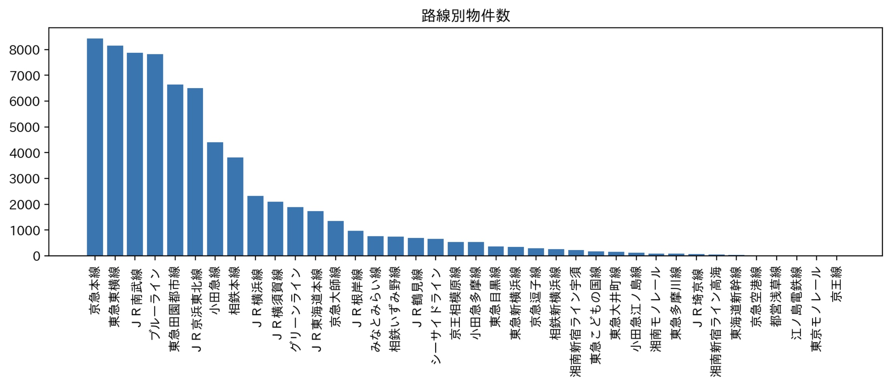
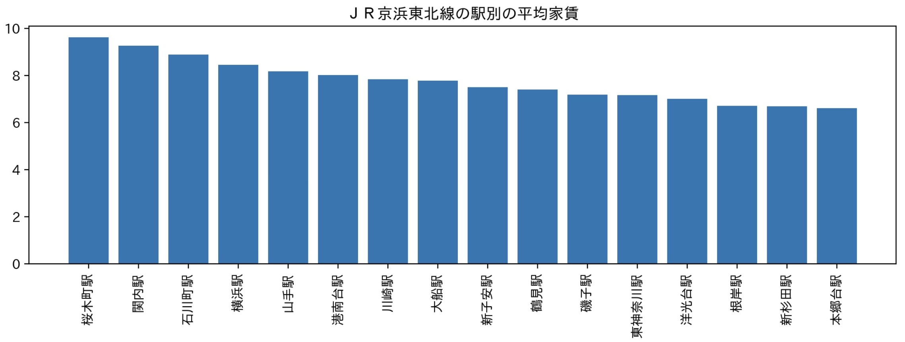
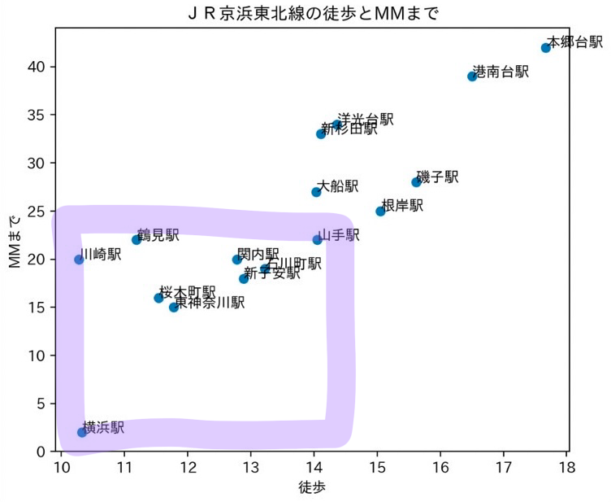
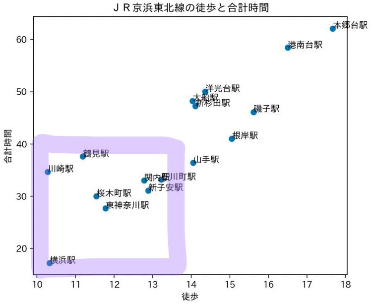
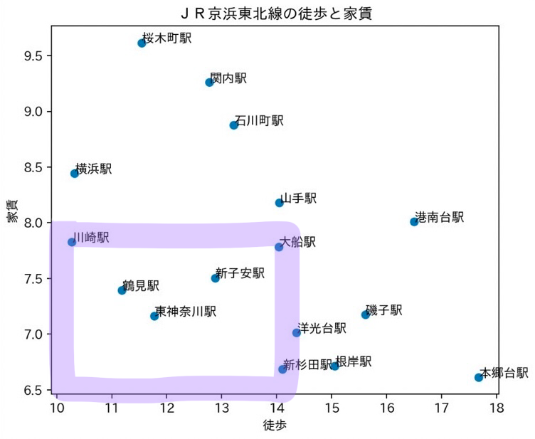
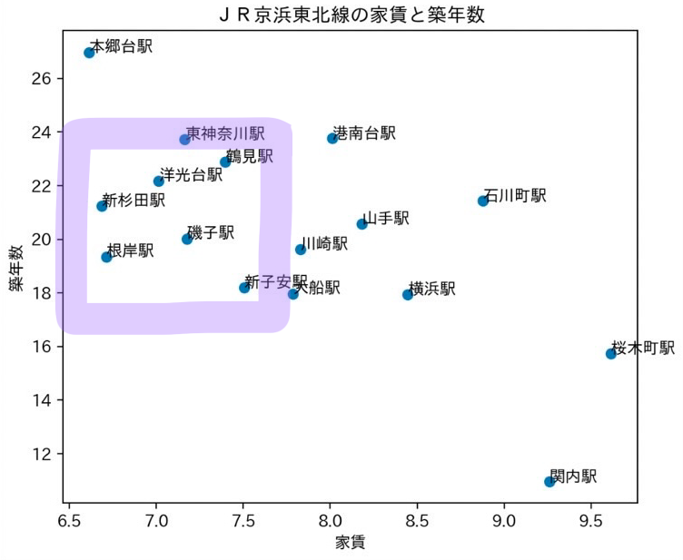

ディズニー大好きYoutuberにおすすめの物件
~この題材にしたきっかけ~
班で自分の好きなYoutuberが住むのに良い物件を調べることになり、私はディズニー大好きYouTuberの「あいにゃん」をテーマにしようと考えた。
神奈川県外の物件は探せないことがわかったため、神奈川県からディズニーに行きやすい物件を探すこととした。
「あいにゃん」は現在2017年にHENRIETTEというアパレル関係の会社を起業し社長となっている。年収は6000万
ディズニーは動画の収益化を禁止したため、Youtubeの収益は少ないと考えられる。
あいにゃんの引越し動画
~今回調べた路線~
神奈川県からディズニーい行きやすい路線で調べた。
JR東海道本線がメジャーであるが、以下のデータよりJR京浜東北線の方が物件数が多かったため京浜東北線で探すこととする。

また、あいにゃんは結婚しているため、これからのことを考えてなるべく大きな家に住むことが望まれると思う





家賃が比較的安く、築年数が短く時間もかからないと思った範囲を四角で囲った
~全ての項目で当てはまった駅~
考察
~結果~
四つのデータ全てで当てはまっている上記の駅は神大生にとって比較的住みやすく、ディズニーへのアクセスも良い駅だと考えられる。
さらに、それらの駅には大きな駅ビルや商業施設が備わっており駅自体の規模が大きく、交通の便だけでなく住みやすさも大きな特徴であると考える。
横浜駅は交通の便はとてもよいが家賃が高く、学生には厳しいことが懸念点であると思う。
家賃が安いところはやはり築年数が長く、築年数が短いところに住むにはお金がかかってしまうということがわかった。